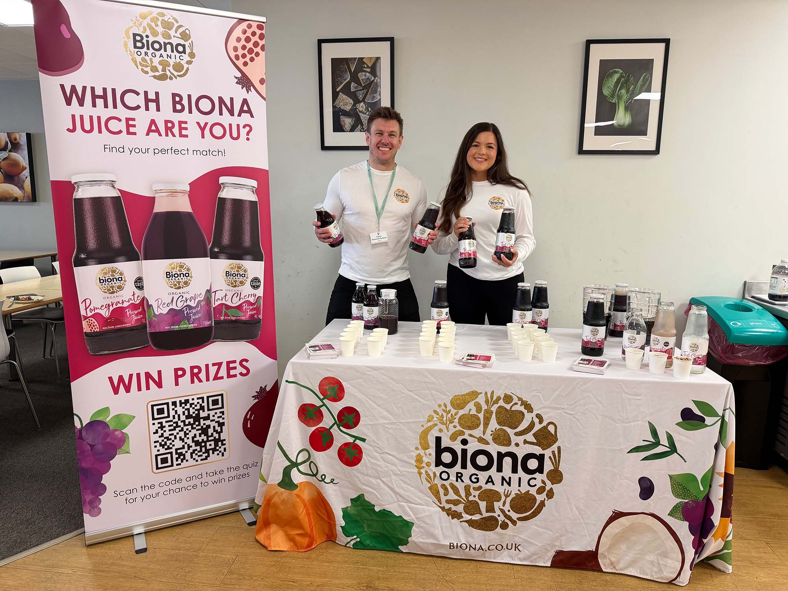
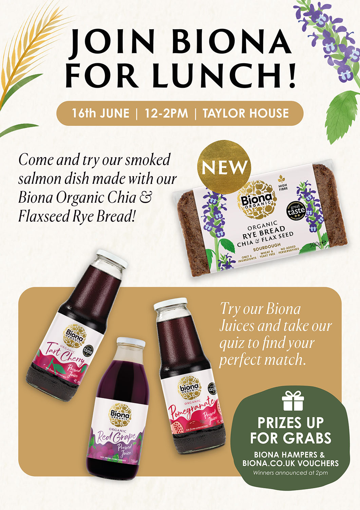
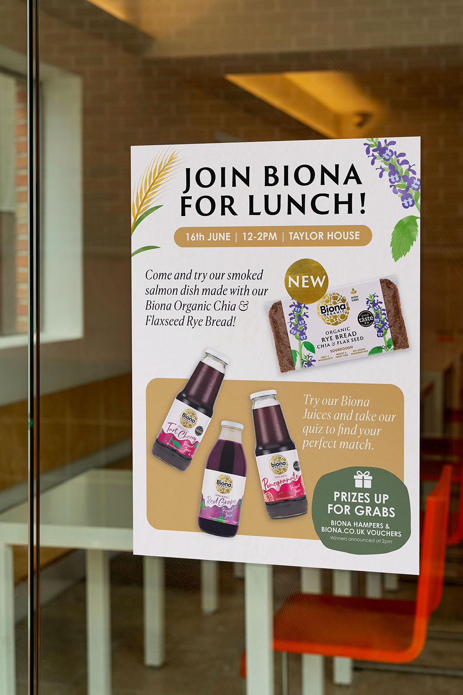
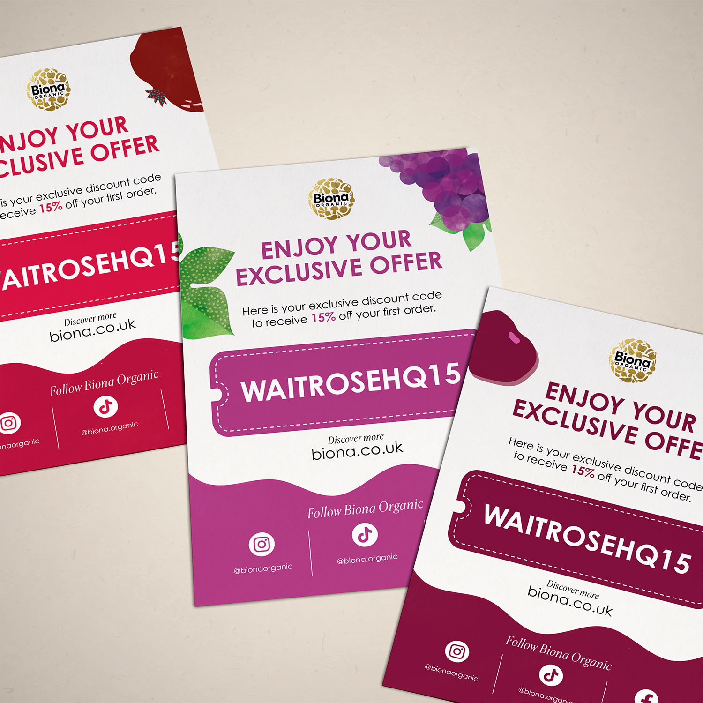
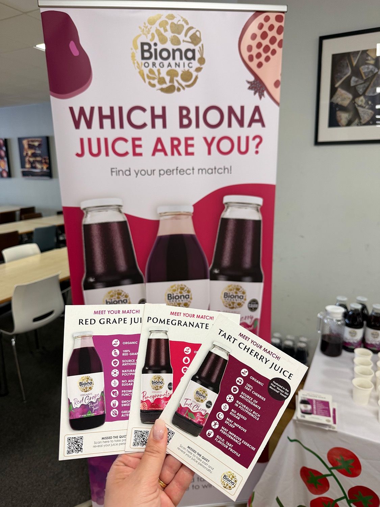

CASE STUDY / EVENT CAMPAIGN
Biona x
Waitrose
Tasting Day.
Event Campaign & Printed Brand Experience
While working at Windmill Organics, I collaborated closely with the marketing and sales teams to create a set of printed materials for a Biona juice tasting event hosted at Waitrose. Guests were invited to sample a selection of organic juices alongside rye bread prepared by Michelin-starred chefs invited by Waitrose. I designed the event poster, double-sided tasting cards and roll-up banner, creating a consistent visual system that guided visitors through the experience and communicated the benefits of each juice.

01 / INVITATION & SIGNAGE
The
invitation.
The A4 poster brought the event details, product imagery and invitation together in one clear layout. The same design was displayed at the venue, connecting the printed communication with the tasting experience.


02 / TASTING & TAKEAWAYS
Printed
touchpoints.
Individual juice cards helped visitors discover each flavour and its benefits, while printed offer cards gave guests something to take away. Both extended the Biona campaign beyond the tasting table.

